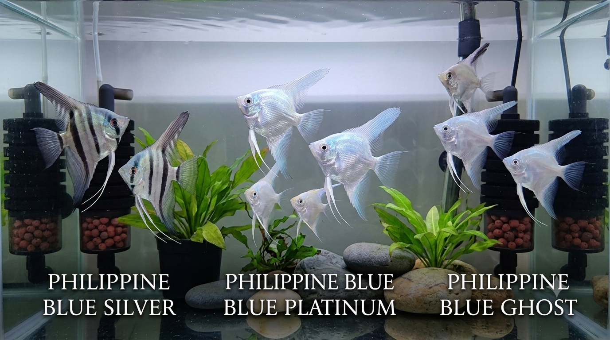
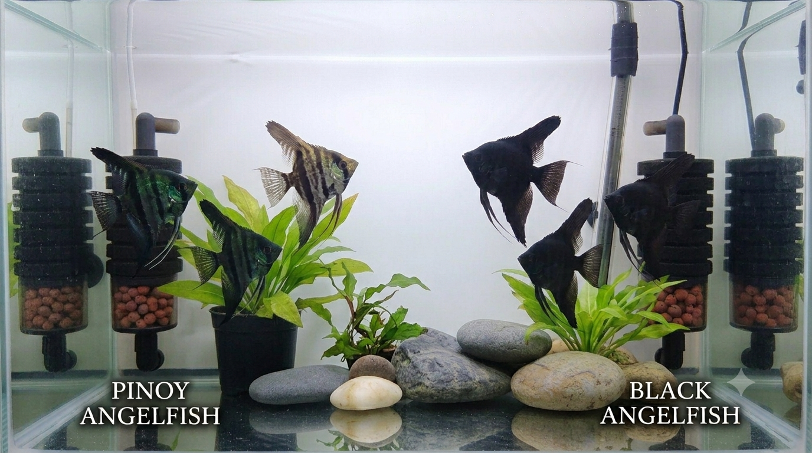
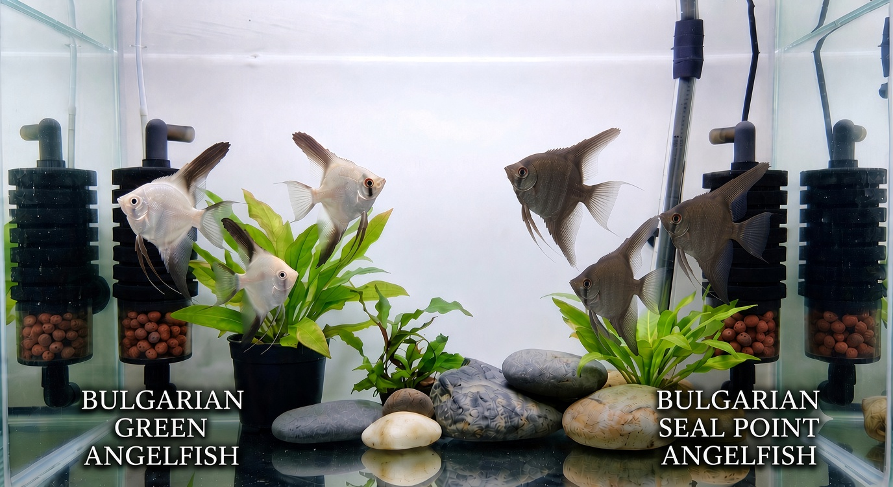

Angelfish
Specialty morphs
New Zealand Tropical Fish Breeder
Specialty angelfish, livebearers and live foods raised with care in New Zealand. Quality genetics, strong fish, ready for your aquarium.
Kia ora! I'm a dedicated tropical fish breeder based in New Zealand, focused on producing healthy, high-quality freshwater fish for local aquarists.
My specialty is angelfish colour morphs — particularly the sought-after Philippine Blue lines, Pinoy, Black, Bulgarian Green and Bulgarian Seal Point. I also breed popular livebearers and culture live foods to give your fish the best start.
All fish are raised in carefully maintained systems with attention to genetics, health and temperament. Whether you're looking for show-quality angelfish or hardy community fish, I'm happy to help.
Specialty morphs
Local breeding
Selected lines
Micro worms
Available fish and live foods. Stock changes regularly — message me for current availability, sizes and pricing.

Silver, Blue Platinum & Ghost
Stunning structural blue iridescence that shifts beautifully under aquarium lighting. Includes Philippine Blue Silver, Blue Platinum, and Ghost varieties.

Dark body morphs & metallic tones
Deep, dark pigmentation with high-contrast characteristics. Pinoy features dark bodies overlaid with intense blue metallic sheen alongside classic solid dark lines.

Specialty Bulgarian genetics
Rare genetic lines featuring distinct colourations ranging from metallic green hues to dark point patterns on a light body.
Colourful, active and hardy. Perfect for community tanks or as a reliable livebearer project.
Classic Xiphophorus with the iconic swordtail. Active mid-water swimmers that add movement and colour.
Excellent first food for fry and small fish. Easy to culture and highly nutritious. Available as starter cultures.
Interested in any of the fish above or want to know current availability and prices? Send me a message — happy to help with advice too.
Pickup or local delivery preferred. Shipping can be arranged for hardy species depending on location and weather.